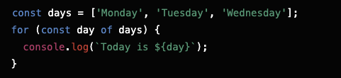
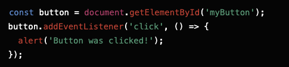
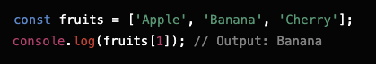
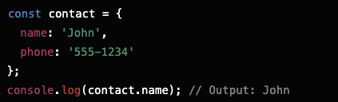
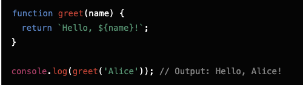

Think of HTML as the skeleton of a webpage—it's what holds everything in place. CSS is like the clothing and makeup that make it look nice. JavaScript, on the other hand, is like the magic that makes it interactive.
Imagine you're preparing breakfast. Here’s how you might use a loop to
simplify the process:
Control Flow: Deciding what to do based on conditions. If it’s a weekend,
you might make pancakes. If it's a weekday, you might just have cereal.
Loop: Repeating a task. If you have multiple eggs to cook, you'd cook each
egg one after another. In JavaScript, this is similar to a loop that
processes each item in an array.
Example:

This loop would print out each day of the week from the days array
The DOM (Document Object Model) is like a map of your webpage that
JavaScript can use to make changes. Think of it as a live representation
of your HTML that you can interact with.
Example:
Imagine you have a button on your webpage:
Using JavaScript, you can interact with this button:

Here, you've used JavaScript to tell the button what to do when it's
clicked.
Arrays: Think of arrays as a list of items, like a shopping list. You
access items by their position (index) in the list.
Example:

Objects: Objects are like a contact list where each contact has a name and
phone number. You access information by its label (key).
Example:

Functions are like mini-programs that do specific tasks. They make your
code reusable and organized.
Example:

Here, the greet function takes a name and returns a greeting. You can use
this function whenever you need a greeting, just by calling it with a
different name.